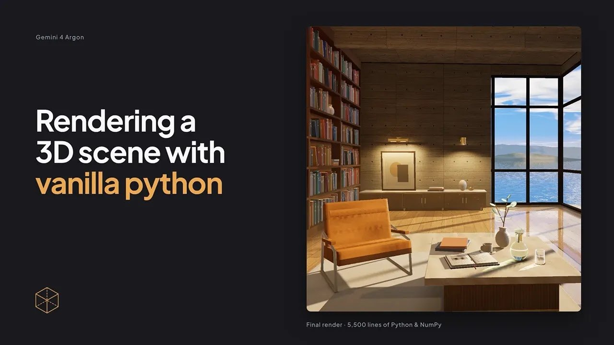
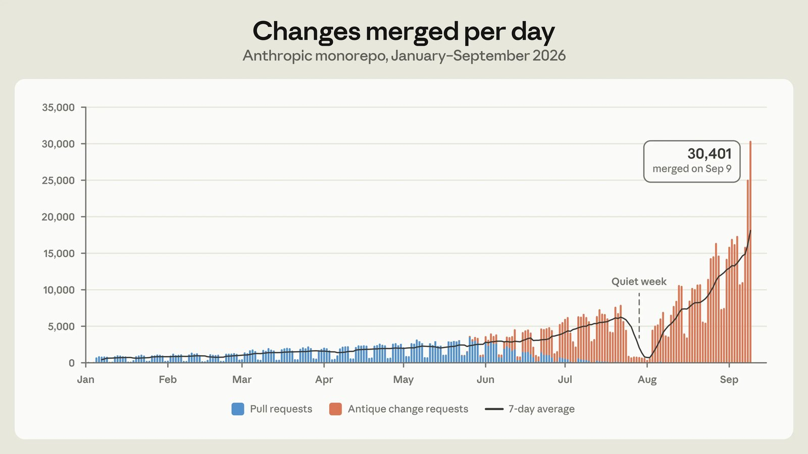
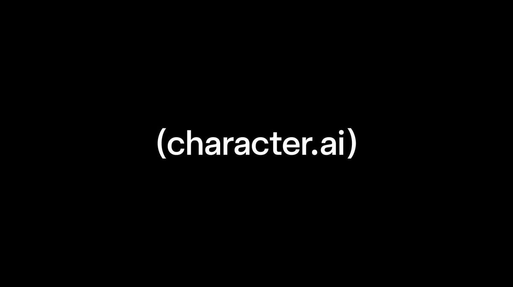

头条 一

图片来源：Google DeepMind谷歌 DeepMind 发布 Gemini 4 Argon，先向 Google AI Pro 与 Ultra 订阅用户开放。官方对比中 DeepSWE 77.9%、Vals Index 68.9% 居首，但 FrontierSWE v2、Terminal-bench 4.0 落后于 GPT-6 Astra 或 Opus 5.5。
成绩单是谷歌自己挑的，赢多输少；Chrome 六百万行代码重构这类案例，比分数更值得看。独立评测出来前，不必急着换模型。
来源：Google DeepMind
头条 二

图片来源：Anthropic EngineeringAnthropic 工程博客称，内部日合并代码改动从 5 月约 2,500 个增至 9 月超 3 万个，git 成了瓶颈。7 人团队用 5 个月自研版本控制系统 Scion，迁走整个 monorepo，CPU 与内存规模降到原镜像方案的 1/200。
写代码不再是瓶颈，合并、测试、审核才是。同时他们也明说：Scion 只适合超大 monorepo，不是 git 的通用替代。
来源：Anthropic Engineering
头条 三

图片来源：Character.ai 官方博客Character.ai 宣布自愿启动 Chapter 11 破产程序，通过法院监督出售公司。官方称平台暂时照常运行，订阅与计费不变，预计 11 月底或 12 月初完成出售；若没有可行报价，平台将被关停。用户可导出数据或删除账号。
这是应用层的风险提示：模型越来越强，不等于靠模型做产品的公司都活得下来。在用的人，先把聊天记录导出来。
来源：Character.ai 官方博客
对比表是谷歌自己选的，两项编码测试没赢。等独立评测再下结论。
Scion 那篇值得细读：不是模型多强，而是 git 先扛不住了。合并、测试、审核成了新瓶颈。
Character.ai 公告里订阅照常、数据可导出。在用这类应用的人，现在就导一份聊天记录。